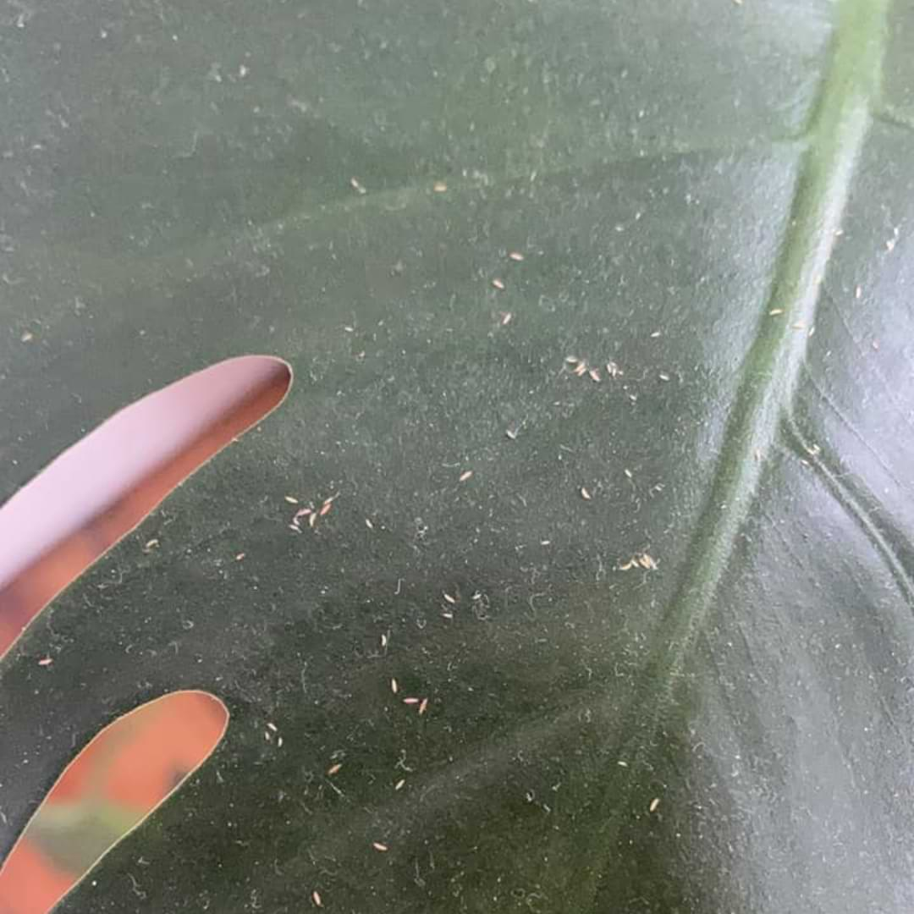

Monstera Pests
Protect your Monstera plants from unwelcome visitors. Identify common pests, understand their impact, and learn effective, eco-friendly methods to manage infestations. Our preventative tips and treatment solutions help you maintain a healthy, pest-free indoor jungle.
Thrips
Thrips are tiny winged insects that can be difficult to see with the naked eye because they’re so small. They can look like miniscule white, brown, or yellow dots moving around on your monstera’s leaves. These little buggers might show up on the tops, undersides, or even the stems of your plant.
Homemade Insecticide
- To make this easy DIY insecticide, just mix 1.5 teaspoons of gentle liquid soap into a quart of water and use immediately. Again, it’s a good idea to test it on a small section of your monstera just to make sure your plant isn’t going to scorch or have any other unwanted reactions.
- Make sure to apply the spray in the morning or evening, because insecticide is only effective while it’s wet. If you use it during the warmest part of the day, it may dry out before it can really get to work on your plant’s leaves!
- Repeat this process every 4-7 days until you don’t see any more thrips and your plant’s condition stabilizes.
